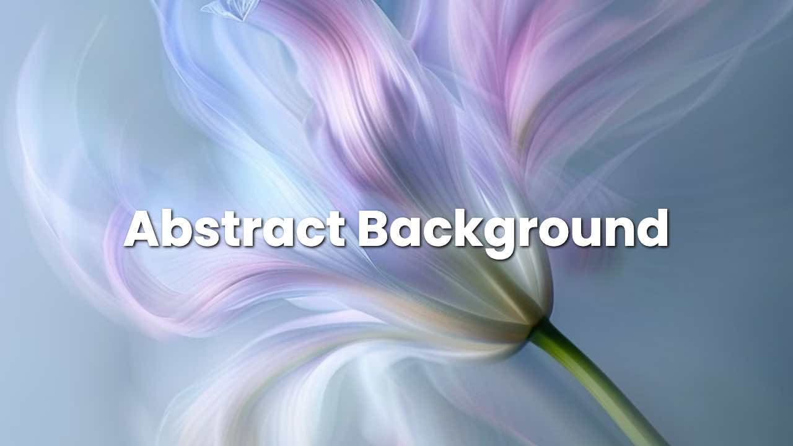

Abstract Background: Popular Styles and How to Easily Create Them with Ideate.xyz Image Studio

Unlocking Visual Interest in Graphic Design, Web Design, Social Media Graphics, and Video Editing
Are you tired of using plain backgrounds in your graphics design or web design? Do you want to add some visual interest to your social media posts, YouTube thumbnails, or web one pagers? Look no further than abstract backgrounds! In this post, we’ll explore what abstract backgrounds are, why they’re so commonly used, and the different types of abstract backgrounds that work well for various use cases.
What is an Abstract Background?
An abstract background is a design element that adds visual interest to your composition without featuring any specific subject matter. Unlike photographs or illustrations, abstract backgrounds don’t depict real-world scenes or objects. Instead, they’re created using shapes, colors, and textures to evoke emotions and moods. Abstract backgrounds are often used in graphic design, web design, social media graphics, and even video editing.
Why Are Abstract Backgrounds So Commonly Used?
Abstract backgrounds have become a staple in modern design because they:
- Add visual interest: Without any distracting elements, abstract backgrounds let your main subject shine.
- Create mood and atmosphere: The colors, textures, and shapes used in an abstract background can evoke emotions and set the tone for your message.
- Are versatile: Abstract backgrounds work with various design styles, from minimalist to maximalist.
- Save time: Since abstract backgrounds don’t require any specific content, you can quickly create them using image generators or design tools like Ideate.xyz Image Studio.
Types of Abstract Backgrounds
While there are countless ways to create abstract backgrounds, some popular types include:
- Gradient Abstract Backgrounds: Gradual color transitions that add depth and visual interest.
- Textured Abstract Backgrounds: Incorporating tactile elements like fabric, wood, or stone textures into your design.
- Patterned Abstract Backgrounds: Geometric patterns, polka dots, or other repeating shapes to create a visually appealing background.
Let’s take a closer look at each type and why they work well for specific use cases:
-
Gradient abstract backgrounds are perfect for social media posts, web one pagers, or YouTube thumbnails because they’re easy to scan and provide a clear visual hierarchy.

-
Textured abstract backgrounds are ideal for product designs, packaging, or website landing pages where you want to create a tactile feel.

-
Patterned abstract backgrounds work well in digital marketing materials like email newsletters, blog posts, or online courses where you need to convey a sense of movement and energy.

Designing with Ideate.xyz Image Studio
Now that we’ve explored the world of abstract backgrounds, let’s talk about how to easily create them using Ideate.xyz image studio! With our platform, you can:
- Generate social media graphics: Quickly design eye-catching social media posts with gradient, textured, or patterned abstract backgrounds.
- Create YouTube thumbnails: Use animated abstract backgrounds to make your videos stand out and grab viewers’ attention.
- Design web one pagers: Create visually appealing web pages with abstract backgrounds that set the tone for your brand.
Style Transfer Function: Quickly Spin Off New Abstract Backgrounds
Want to take your abstract background game to the next level? Use our style transfer function in Ideate.xyz image studio to quickly generate new backgrounds in the same style as a reference image! Simply upload an abstract background image, and our AI will automatically apply the same style to create a unique, high-quality background.
In conclusion, abstract backgrounds are a powerful tool for adding visual interest to your graphics design and web design. By understanding different types of abstract backgrounds and how they work for various use cases, you can elevate your designs and make them more engaging. With Ideate.xyz image studio, creating abstract backgrounds is easier than ever – try it out today!